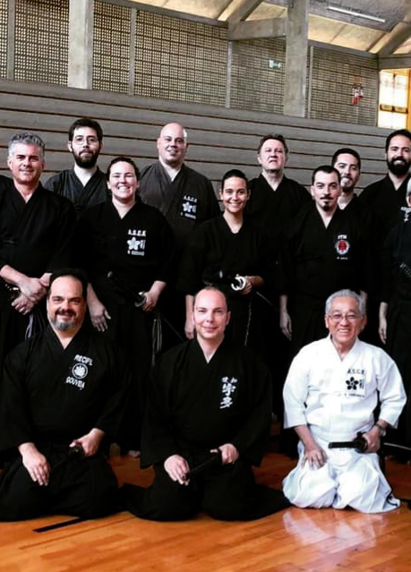

Genbukan Brasil - Uma Introdução
O grupo Genbukan Brasil tem como objetivo o treino e estudo da prática do Iaido (esgrima tradicional japonesa) do Koryu (escola tradicional) Muso Jikiden Eishin Ryu da linhagem de Oshita Masakazu Sensei (8º Dan Hanshi) e Alexandre Pereira Sensei (7º Dan Renshi) em território brasileiro. Contamos com diversos grupos membro localizados ao longo de todo território nacional com o mesmo propósito de aprimoramento técnico e cultural da linhagem do Muso Jikiden Eishin Ryu de Alexandre Pereira Sensei. Cada grupo membro está vinculado à Confederação Brasileira de Kendo (CBK) por meio de suas associações regionais. Temos, assim, uma relação direta com a Federação Japonesa de Kendo (Zen Nihon Kendo Renmei - ZNKR). Neste site, buscamos a divulgação de conteúdo de qualidade e com referência técinca sobre Iaido em geral, abarcando tanto o Muso Jikiden Eishin Ryu, o Seitei Iai da ZNKR, e demais escolas e temáticas que englobam o mundo do Iaido.
Notícias
1o Campeonato Latino-americano de Iaido
- 
-